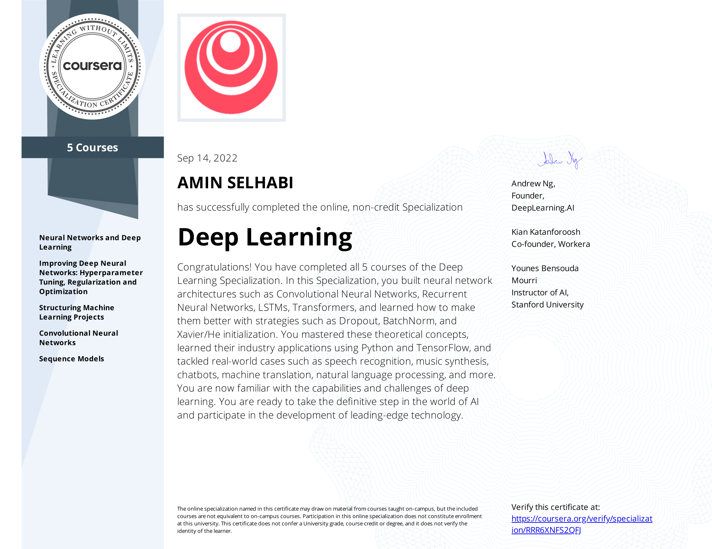

Brokerage Information System
Software Architecture and Design
I proposed a design for the Messaging Infrastructure layer of the new Brokerage Information System (BIS) for BizCo company, alongside my colleague Moaz.

Aspiring software engineering intern eager to apply technical skills, collaborate on innovative projects, and enhance user experiences. Seeking hands-on opportunities to learn and contribute in a challenging environment
My top 3 projects. Check out my Github for more projects.
I proposed a design for the Messaging Infrastructure layer of the new Brokerage Information System (BIS) for BizCo company, alongside my colleague Moaz.
Collaborated on project initiation, planning, execution, monitoring, and control for the Online Parking Reservation System.

Led a team in emphasizing Human-Computer Interaction principles for creating a user-friendly interface.

Earned eJPT v2 certification demonstrating expertise in penetration testing methodologies.

Completed "Nanodegree Introduction to Cybersecurity".

Accomplished the Deep Learning Specialization, gaining expertise in various deep learning techniques.
Completed AI Product Manager Nanodegree, gaining expertise in managing AI products.


Excellent communicator and problem solver. A valuable collaborator.


Skilled team member.


Linux expert and innovative thinker.


Skilled collaborator.

Effective team member.